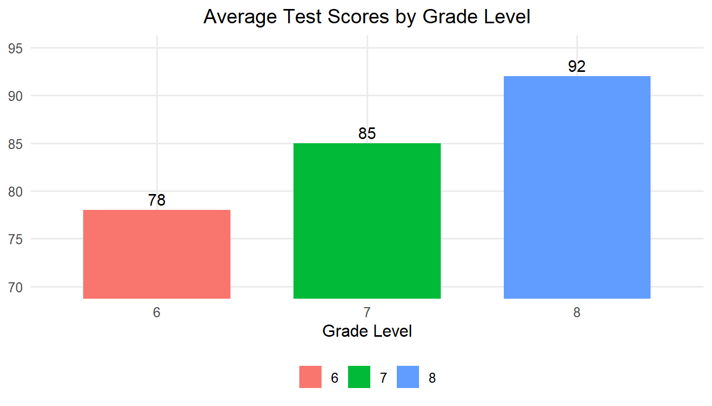
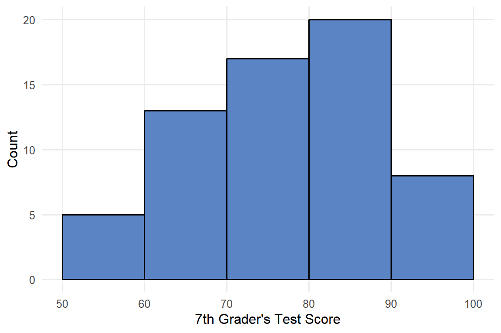
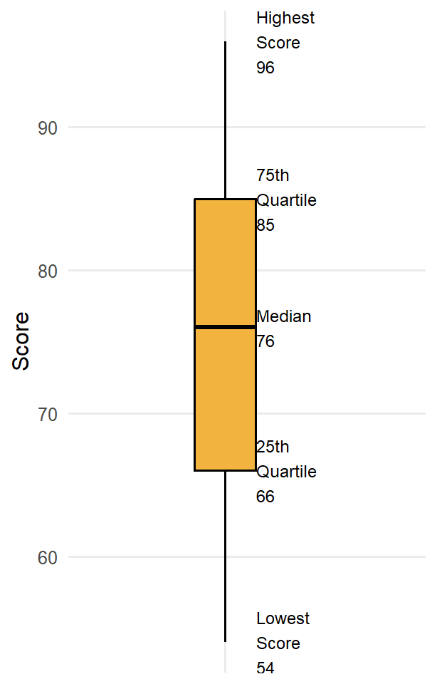
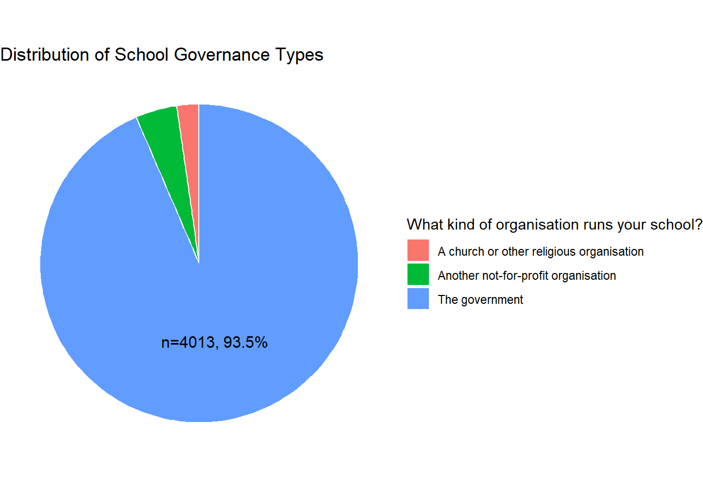
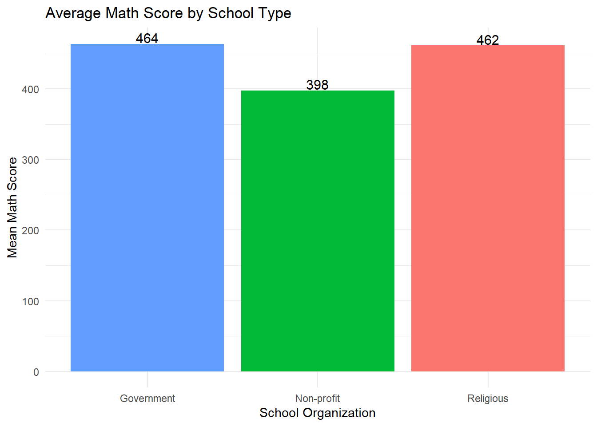
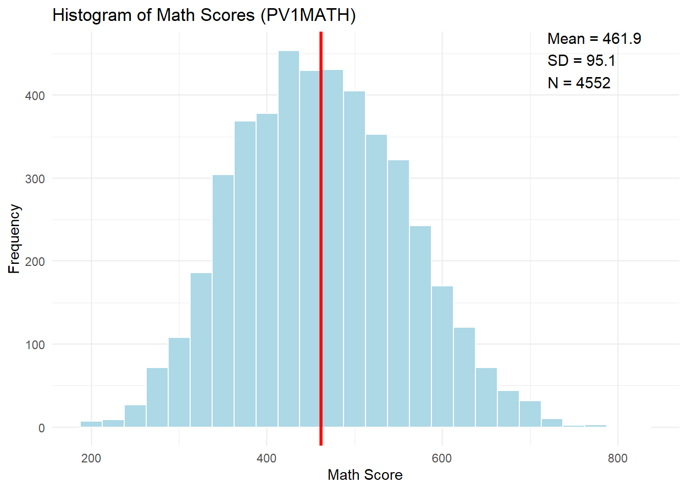
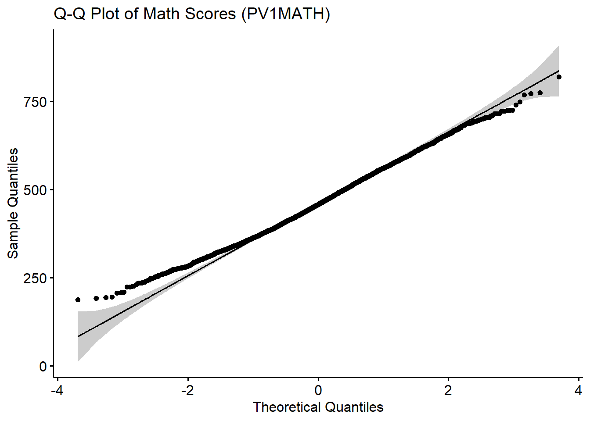
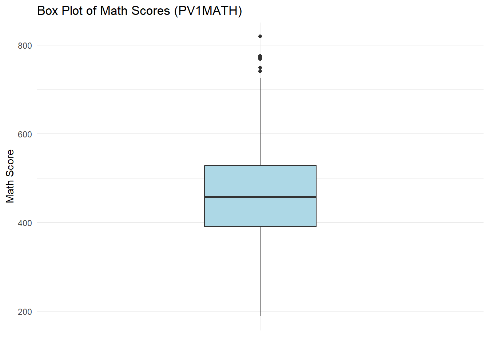
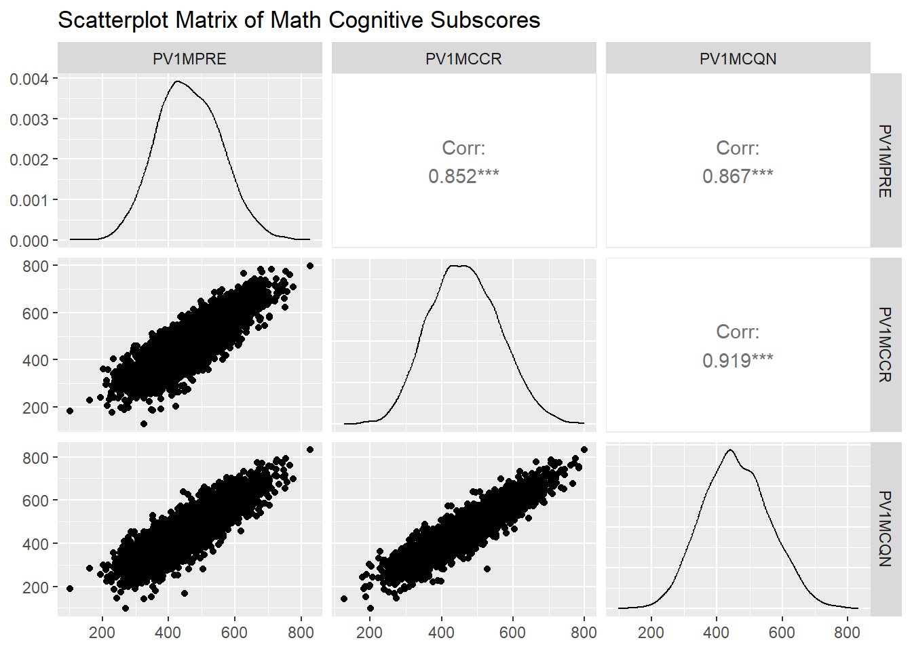

4 Chapter 4
Displaying Data Graphically
Learning Objectives
By the end of this chapter, you will be able to:
Identify appropriate graphical methods (e.g., bar graphs, histograms, box plots, scatter plots) to summarize and communicate patterns, trends, and variability in categorical and continuous data.
Construct clear, accurate, and meaningful data visualizations that effectively communicate key insights while avoiding common pitfalls such as distortion, poor labeling, or overcomplicated designs.
Exploratory data analysis is an approach that involves examining datasets to summarize their main characteristics, identify patterns, and uncover insights, often using visual methods. This technique is widely used in education-related fields to gain insights from educational data, improve decision-making, and inform policy and practice. You could take an entire course about data visualization, so for now we will only summarize some of the key concepts.
Data visualization refers to the graphical representation or structured representation of information and data to facilitate understanding and interpretation. By using charts, graphs, figures and tables, we present information in a way that highlights trends, outliers, and patterns in raw data. While graphs and charts are commonly associated with data visualization in educational research, tables also serve as a fundamental tool by systematically organizing numerical and categorical data for easy comparison. Unlike graphical displays, which emphasize patterns and relationships, tables provide precise values and detailed breakdowns, making them particularly useful when exact numerical reporting is required. Understanding how to display data is important for multiple steps in the research process. You may notice an interesting pattern that you want to investigate more closely, so creating well-designed tables and graphs might be the start of deeper investigation into your research.
Frequently, the first step in data analysis is visualizing the data to confirm it meets the assumptions of your planned analysis method. For example:
If you want to know whether your dependent variable is approximately normally distributed, you create a histogram.
If you want to see if the amount of variation is similar between two groups, you create a box plot.
If you want to see if there is a linear relationship between two variables, you create a scatter plot.
Displaying your data graphically can also be a critical part of sharing the results of any analysis, and you want to do so in a way that communicates your message effectively.
A good graph should
- Show the data with the appropriate visualization (e.g., bar chart, scatter plot, histogram) based on the type of data and relationships being displayed
- Induce the reader to think about the data being presented
- Get as much information across as possible within limited space (use a clean and simple design that enhances clarity without excessive grid lines or redundant elements)
- Make large data sets coherent
- Encourage the reader to ask additional questions about the data
- Communicate the findings or your key message about the data
- Maintain uniform styles, colors, and labeling conventions across multiple graphs
A good graph should NOT
- Distort the data (intentionally or unintentionally)
- Use 3-D effects for a graph plotting two variables
- Go overboard with patterns and effects that distract from the key message (overloading a graph with too many data series can make it unreadable)
- Have badly labeled axes (number of what???)
While graphical representations are powerful for identifying patterns and trends, there are instances where a structured, numerical representation is more effective. In cases where precision, exact comparisons, or detailed breakdowns are needed, tables serve as an essential tool for organizing and presenting data.
A table is an organized arrangement of data in rows and columns, designed to systematically display values, frequencies, or relationships for easy comparison and interpretation. Tables are essential tools for summarizing data in educational contexts because they provide a clear, structured way to organize and present information. They allow educators, administrators, and policymakers to quickly interpret numerical and categorical data, making it easier to identify trends, compare variables, and draw meaningful conclusions. For instance, tables can display student performance across subjects, attendance rates, or resource allocation across schools, enabling stakeholders to make data-driven decisions. Unlike graphical displays, tables provide precise values, making them particularly useful when exact numbers are necessary for analysis or reporting. Moreover, tables are versatile, as they can accommodate large amounts of data and be customized to highlight specific details, such as subgroup comparisons or longitudinal trends, fostering better understanding and informed actions in educational settings.
Let’s walk through a scenario to illustrate how tables and graphical displays can be used. A school administrator wants to compare the average test scores of students across grade levels in one middle school. The table below shows average scores. It is very easy to see that the average scores for grades 6, 7, and 8 are 78, 85, and 92, respectively.
| Grade Level | Average Test Score |
|---|---|
| 6 | 78 |
| 7 | 85 |
| 8 | 92 |
Another way we could visual this data is through the use of a bar graph. Bar graphs are particularly effective for displaying data across discrete categories, such as grade levels, school districts, or subject areas, making complex information easier to understand. For example, bar charts can be used to compare average test scores across grade levels, participation rates in extracurricular activities, or funding allocations across departments. Their straightforward design allows educators and administrators to quickly identify patterns, trends, and disparities, such as gaps in performance or resource distribution. Bar graphs also help communicate findings effectively to diverse audiences, including students, parents, and policymakers, as the visual format is easy to interpret. By simplifying the presentation of categorical data, bar graphs support data-driven decision-making and facilitate meaningful discussions about improving educational outcomes.
Bar graphs use vertical bars to represent the data. The height of the bars often represents the frequencies of some dependent variable for the categories that are displayed along the X-axis. Note that by tradition, the X-axis (independent variable) is the horizontal axis and the Y-axis (dependent variable) is the vertical axis. The following bar graph shows the same information as the previous table.
Histograms summarize the frequency of continuous data that are grouped. Values of the independent variable are along the X-axis, grouped by equal intervals. Typically, the height of the rectangle, measured by the Y-axis, equals the frequency recorded for each interval. The base of each rectangle begins and ends at the lower and upper boundaries, seen from left to right, of each interval, and each rectangle touches adjacent rectangles at the boundaries of each interval.
It may seem like a bar graph and a histogram are the same, but in the world of statistics, it matters whether the bars touch each other. A bar graph, with separated bars, is used for categorical or discrete variables, or sometimes for variables based on ordinal scales as well. The separation shows that these are discrete categories rather than groupings of a continuous variable where the group size could be adjusted to whatever you want. Unlike bar charts, histograms group data into intervals, bins, to show the distribution of a dataset, making them useful for identifying skewness, outliers, or overall patterns in continuous variables.
Our school administrator now wants to look at the distribution of test scores for just 7th graders, but they decided to group scores in the following categories: 50-60, <60-70, <70-80, <80-90, and <90-100. The histogram showing a summary of the dataset is included below in Figure 4.2.

A stem-and-leaf plot is a graphic display where each individual score from the original data set is listed in a relatively compact manner. Common digits shared by all scores are listed to the left, and the remaining digits for each score are listed to the right. So, the stems are the first digit(s) and the leaves are the last digit(s). Rather than giving a frequency count, this is a way of summarizing the data visually because you can see which stems have the most leaves while also displaying the actual scores. Stem-and-leaf plots are best suited for small datasets where all numbers are greater than 0 (Moore, McCabe, & Craig, 2021). Here is a stem-and-leaf plot for our example:
Stem-and-Leaf Plot of Test Scores
5 | 4 5 5 5 6
6 | 3 4 4 5 5 5 5 6 6 6 6 7 7
7 | 3 4 4 4 5 5 5 5 5 6 6 6 6 6 7 7
8 | 3 3 4 4 4 5 5 5 5 5 5 5 6 6 6 6 6 6
9 | 4 4 5 5 5 6 6
Key: 7 | 5 represents a score of 75A box plot, or box-and-whisker plot, is a graphical representation of data that shows its central tendency, variability, and distribution through a box indicating the interquartile range (IQR), a line for the median, and whiskers extending to the smallest and largest non-outlier values. They are typically oriented vertically, but the example below is horizontal for ease of displaying the various parts. At the center of the box plot is a line representing the median (50th percentile) for the data, surrounded by a box representing the inter-quartile range (IQR, or the 25th to 75th percentile). Then there are lines extending out from the box (these are the whiskers). Most often these will extend to the smallest and largest observed points in the dataset that are within 1.5 times the IQR. If there are outliers in the dataset that fall beyond the whiskers, they are typically represented by individual circles.


A scatterplot is a graphical representation that displays individual data points based on two variables, with one variable plotted along the X-axis and the other along the Y-axis, allowing researchers to visualize relationships between them. In educational research, scatterplots are essential for identifying correlations and trends, such as the relationship between socioeconomic status and academic performance or hours spent studying and test scores. By highlighting patterns, such as positive, negative, or no correlation, scatterplots provide insights into potential causal or influential factors that can guide further investigation. Additionally, scatterplots help researchers detect outliers or anomalies, such as students performing significantly above or below the expected trend, which can inform targeted interventions or support. This ability to visually explore complex data relationships makes scatterplots a valuable tool in understanding and improving educational outcomes. Examples of scatterplots showing each individual test score are included below in Figure 4.5. (figure 4.5 here)
A Q-Q (Quantile-Quantile) plot is a graphical tool used to assess whether a dataset follows a specific theoretical distribution, most commonly the normal distribution. In a Q-Q plot, the quantiles of the observed data are plotted against the quantiles of the chosen distribution (e.g., normal distribution). If the points in the plot fall approximately along a 45-degree reference line, it suggests that the data conforms to that distribution. Deviations from this line indicate departures from the expected distribution, such as skewness, kurtosis, or outliers. Q-Q plots are particularly valuable in educational research when determining if data, such as student test scores or survey responses, meet the assumptions required for parametric statistical tests that we will cover later in the book. For instance, a researcher analyzing standardized test scores might use a Q-Q plot to check for normality before conducting a t test or an analysis of variance (ANOVA) – we will learn both methods later. While histograms provide a general sense of distribution, Q-Q plots offer a more precise visual check by directly comparing observed data with a theoretical model.
Imagine an educational researcher wants to assess whether a sample of students’ math scores follows a normal distribution. The Q-Q plot below demonstrates how well the data aligns with a normal distribution. Most points fall along the 45-degree line, indicating normality, though a few points deviate slightly at the ends, suggesting potential outliers.
(fig 4.6 here)
Including Q-Q plots in your data visualization toolkit enhances your ability to diagnose data distribution issues, ensuring that your chosen analytical methods are appropriate and reliable. This tool, combined with histograms, box plots, and other visualizations, provides a comprehensive approach to exploratory data analysis.
A pie chart is a circular graph divided into slices, where each slice represents a proportion of a whole, making it ideal for visualizing percentages or relative frequencies. In educational research, pie charts are often used to illustrate the composition of groups or categories, such as the distribution of students by socioeconomic status, the percentage of students enrolled in various extracurricular activities, or the allocation of a school’s budget across different programs. For example, a pie chart could show the proportion of students achieving different performance levels on a standardized test, allowing researchers to identify the largest and smallest groups at a quick glance. Pie charts are particularly effective for presenting summary data to audiences who may not have extensive statistical training, as they provide an intuitive and visually engaging way to communicate the breakdown of categories. However, they are most useful when there are relatively few categories, as too many slices can make interpretation challenging. An example showing students enrollment across grades 6, 7, and 8 from the administrator’s middle school is included in figure 4.7. (FIG 4.7)
4.1 Conclusion
Chapter 4 emphasizes the importance of data visualization in educational research, providing an overview of various graphical methods and their applications. From bar charts and histograms to box plots and scatterplots, each visualization tool serves a unique purpose in summarizing and communicating data. These tools help researchers and educators uncover patterns, trends, and outliers, offering valuable insights that inform decision-making and policy development. The chapter also highlights the distinction between categorical and continuous data representations and underscores the importance of designing graphs that are clear, accurate, and effective in delivering key messages.
Through practical examples, such as comparing test scores across grade levels or visualizing the relationship between two continuous variables like study hours and academic performance, this chapter demonstrates how graphical displays can reveal meaningful patterns and insights from raw data. By integrating tables, stem-and-leaf plots, and pie charts alongside more complex visualizations, educators and researchers are equipped with the tools to present findings in ways that are both clear and informative. This foundational understanding of data visualization sets the stage for exploring deeper analytical techniques and leveraging data to improve educational outcomes. As we move forward, the next chapter will explore the normal distribution, an essential statistical concept that will further refine our ability to interpret data and make meaningful inferences.
4.1.1 Key Takeaways for Educational Researchers from Chapter 4
Incorporate data visualization to summarize patterns and trends. In educational research, data visualization helps uncover meaningful insights from student performance metrics, survey responses, and institutional data. Bar graphs, histograms, and scatterplots allow researchers to identify trends in student achievement, compare subgroup differences, and detect outliers that may indicate unique challenges or exceptional performance. By transforming raw numbers into graphical representations, educators and policymakers can more easily interpret and act on findings.
Choose the right visualization for your data and analysis needs. Different types of data require different graphical techniques to accurately convey insights. Choose the correct visualization (e.g., box plots for variability, Q-Q plots for checking normality) based on the type of data and analysis requirements to ensure clarity and enhance interpretability.
Ensure clarity and accuracy in graph design. Well-designed graphs improve comprehension and reduce the risk of misinterpretation. In educational research, this means clearly labeling axes, ensuring consistent scales when comparing multiple groups, and avoiding misleading visual distortions (e.g., truncating axes to exaggerate differences). Additionally, color choices and legends should enhance readability, especially when presenting findings to diverse audiences, including educators, administrators, and policymakers. A clear, accurate graph allows stakeholders to draw valid conclusions and make informed decisions.
Use data visualization for exploratory analysis. Before applying statistical models, researchers can use graphical methods to check assumptions. For instance, histograms and box plots help assess the distribution of student test scores before conducting an ANOVA, while scatterplots with trendlines can reveal nonlinear relationships between study time and GPA. Detecting patterns early through visualization can prevent errors in model selection and improve the robustness of conclusions in educational research.
Incorporate visualizations in research reporting for effective communication. Effective visualizations bridge the gap between complex analyses and actionable insights. When reporting findings on student achievement or the effectiveness of instructional interventions, incorporating well-crafted charts, tables, and dashboards can make data accessible to decision-makers. Visuals enhance storytelling in research, making data-driven recommendations more compelling and easier to act upon.
4.2 Key Definitions from Chapter 4
A bar graph is a graphical representation of data using rectangular bars, where the length or height of each bar corresponds to the value or frequency of a specific category or group. There is a gap between each bar.
A box plot (or box-and-whisker plot) is a graphical representation of data that shows its central tendency, variability, and distribution through a box indicating the interquartile range (IQR), a line for the median, and “whiskers” extending to the smallest and largest non-outlier values.
Exploratory data analysis is an approach that involves examining datasets to summarize their main characteristics, identify patterns, and uncover insights, often using visual methods.
Histograms summarize the frequency of continuous data that are grouped. The bars on a histogram touch one another.
A pie chart is a circular graph divided into slices, where each slice represents a proportion of a whole, making it ideal for visualizing percentages or relative frequencies.
A scatterplot is a graphical representation that displays individual data points based on two variables, with one variable plotted along the x-axis and the other along the y-axis, allowing researchers to visualize relationships between them.
A stem-and-leaf plot is a graphic display where each individual score from the original data set is listed in a relatively compact manner. Common digits shared by all scores are listed to the left, and the remaining digits for each score are listed to the right.
A Q-Q (Quantile-Quantile) plot is a graphical tool used to assess whether a dataset follows a specific theoretical distribution, most commonly the normal distribution.
A table is an organized arrangement of data in rows and columns, designed to systematically display values, frequencies, or relationships for easy comparison and interpretation.
4.3 Check Your Understanding
What is the primary purpose of using a histogram in educational research?
To compare categories of data.
To display the relationship between two variables.
To summarize the frequency of continuous data grouped into intervals.
To show proportions of a whole.
Which visualization method is best suited for identifying relationships or correlations between two variables?
Pie chart
Box plot
Scatterplot
Stem-and-leaf plot
In a box-and-whisker plot, the interquartile range (IQR) is represented by:
The lines extending from the box to the smallest and largest values.
The box itself, showing the range between the 25th and 75th percentiles.
The line in the center of the box representing the median.
The individual dots outside the whiskers.
What is a key advantage of tables in presenting data?
They simplify relationships between variables visually.
They display trends and patterns intuitively.
They highlight outliers in large datasets.
They summarize data with precise values for comparison.
What is the key difference between a bar chart and a histogram?
Bar charts use touching bars to represent continuous data, while histograms use separated bars for discrete data.
Bar charts use separated bars for discrete data, while histograms use touching bars for continuous data.
Bar charts are only used for percentages, while histograms are used for counts.
There is no difference; the terms are interchangeable.
Chapter 4: Displaying Data Graphically in R
This section demonstrates various data visualization techniques using the PISA 2022 U.S. dataset. We will illustrate how to effectively present categorical and continuous variables using pie charts, bar charts, histograms, stem-and-leaf plots, box plots, scatterplot matrices, and Q-Q plots.
# Load required package
library(haven)
library(ggplot2)
library(dplyr)
library(car) # for QQ plot helper if desired
library(GGally) # for scatterplot matrix
library(ggrepel) # for better text labels in plots
library(ggpubr) # for Q-Q plot
# Load the dataset
data <- read_sav("chapter3/Clean-data_mar6.sav") 1 Pie Chart: Categorical Distribution
We begin by visualizing the distribution of school governance types (SC014Q01TA: “What kind of organization runs your school?”).
# Convert the SPSS‑labelled variable to an R factor
data <- data |> mutate(OrgType = as_factor(SC014Q01TA))
# Create a frequency table and calculate percentages
school_org_df <- data |>
count(OrgType) |>
filter(!is.na(OrgType)) |> # Filter out NA values
mutate(Percent = round(100 * n / sum(n), 1)) # Calculate percentage
school_org_df # A tibble: 3 × 3
OrgType n Percent
<fct> <int> <dbl>
1 A church or other religious organisation 97 2.3
2 Another not-for-profit organisation 181 4.2
3 The government 4013 93.5# Create the pie chart
# Create a label that combines OrgType, Count, and Percent
school_org_df <- school_org_df |>
mutate(Label = ifelse(Percent<5, "", paste0("n=", n, ", ", Percent, "%")))
#data label appear when percentage is greater than 5%
ggplot(school_org_df, aes(x = "", y = n, fill = OrgType)) +
geom_bar(width = 1, stat = "identity", color = "white") +
coord_polar("y") + #wrapping the bars around a circle, using the y-axis (the count) as the angle for each slice
theme_void() +
geom_text(aes(label = Label),
position = position_stack(vjust = 0.5),
size = 4) +
labs(title = "Distribution of School Governance Types") 
Interpretation: The frequency table and pie chart above indicates that, within this PISA sample, most students attend government-run schools (n=4013, 93.5%), while relatively few are enrolled in schools managed by religious (n=97, 2.3%) or other not-for-profit organizations (n=181, 4.2%).
2 Bar Chart: Comparing Mean Math Scores by School Type
We will now create a bar chart to compare the mean math scores (MATH) across different school governance types.
# Calculate means for each school type
mean_scores <- data |>
group_by(OrgType) |>
summarise(MeanMath = round(mean(PV1MATH, na.rm = TRUE))) |>
filter(!is.na(OrgType))
# recode the values for concise display
mean_scores <- mean_scores |>
mutate(
SchoolType = case_when(
OrgType == "A church or other religious organisation" ~ "Religious",
OrgType == "Another not-for-profit organisation" ~ "Non-profit",
OrgType == "The government" ~ "Government"
)
)
mean_scores # A tibble: 3 × 3
OrgType MeanMath SchoolType
<fct> <dbl> <chr>
1 A church or other religious organisation 462 Religious
2 Another not-for-profit organisation 398 Non-profit
3 The government 464 Government# Plot bar chart
ggplot(mean_scores, aes(x = SchoolType, y = MeanMath, fill = OrgType)) +
geom_col() +
geom_text(aes(label = MeanMath),
vjust = -0.1, # Position labels just above the bar
size = 4) +
labs(title = "Average Math Score by School Type",
x = "School Organization",
y = "Mean Math Score") +
theme_minimal() +
theme(legend.position = "none") 
Interpretation: The bar chart shows that students in government-run schools have the highest average math score (464), closely followed by those in schools run by religious organizations (462). Students in schools operated by other not-for-profit organizations have a lower average math score (398). ## 3 Histogram: Overall Distribution of Math Scores {.unnumberred} We now inspect the distribution of math scores (PV1MATH) across all students.
# Calculate summary statistics
mean_math <- mean(data$PV1MATH, na.rm = TRUE)
sd_math <- sd(data$PV1MATH, na.rm = TRUE)
n_math <- sum(!is.na(data$PV1MATH))
# Format summary text
summary_text <- paste0(
"Mean = ", round(mean_math, 1),
"\nSD = ", round(sd_math, 1),
"\nN = ", n_math
)
ggplot(data, aes(x = PV1MATH)) +
geom_histogram(binwidth = 25, fill = "lightblue", color = "white") +
geom_vline(aes(xintercept = mean_math), color = "red", size = 1.2) +
labs(title = "Histogram of Math Scores (PV1MATH)",
x = "Math Score", y = "Frequency") +
annotate(
"text",
x = max(data$PV1MATH, na.rm = TRUE) - 100, # Adjust as needed
y = Inf, label = summary_text, hjust = 0, vjust = 1,
size = 4
) +
theme_minimal() 
Interpretation: The histogram shows the distribution of U.S. students’ math scores (PV1MATH) on the PISA assessment. The distribution is approximately symmetric and bell-shaped, centered around a mean of 461.9 with a standard deviation of 95.1.This pattern suggests that math achievement is fairly normally distributed in the sample. ## 4 Q-Q Plot: Assessing Normality of Math Scores {.unnumbered}
ggqqplot(data$PV1MATH,
title = "Q-Q Plot of Math Scores (PV1MATH)",
xlab = "Theoretical Quantiles", ylab = "Sample Quantiles") 
Interpretation: The Q-Q plot compares the distribution of math scores (PV1MATH) to a theoretical normal distribution. Most of the data points fall close to the reference line, indicating that the distribution of math scores is approximately normal. However, In the lower tail, the observed quantiles sit above the reference line (i.e. less extreme than a normal lower tail would predict); in the upper tail, they lie below the line (again, less extreme than normal). That pattern at both ends means the math‑score distribution has slightly lighter tails than a true normal distribution.
Overall, the distribution of math scores appears reasonably normal, supporting the use of parametric statistical methods for further analysis, which will be introduced in the following chapters.
5 Stem-and-Leaf Plot and Box Plot
We will create a stem-and-leaf plot and a box plot to further visualize the distribution of math scores (PV1MATH).
Note that the stem-and-leaf plots are best for small to moderate datasets (e.g., N < 100–200). For illustration, we will randomly select 100 math scores to create the plot.
# Stem-and-leaf plot
set.seed(12345)
subset_scores <- sample(data$PV1MATH, 100) # randomly select 100 scores
stem(subset_scores)
The decimal point is 2 digit(s) to the right of the |
2 | 66
3 | 000133344
3 | 55667777788888889999
4 | 00000011122334444
4 | 55566777999999
5 | 00011223334444
5 | 677777888999
6 | 00111224
6 | 5556Interpretation: The stem-and-leaf plot provides a compact visualization of the distribution of the selected math scores, displaying the actual data values in a way that preserves information about the shape and spread.
Range of Scores: The math scores in this subset range from approximately 260 (2 | 66) up to around 660 (6 | 5556).
Central Tendency: The 400s and 500s stems are the most densely populated, indicating that most students scored between 400 and 599.
Skewness and Symmetry: The plot appears slightly right-skewed, evidenced by a longer tail on the higher end (the 600s).
# Box plot
ggplot(data, aes(x = "", y = PV1MATH)) +
geom_boxplot(fill = "lightblue", width=0.3) +
labs(title = "Box Plot of Math Scores (PV1MATH)",
y = "Math Score", x = NULL) +
theme_minimal() 
Interpretation: The box plot shows that most students’ math scores are clustered in the mid-range, with a few students scoring exceptionally high. The distribution is slightly right-skewed, and the presence of upper outliers indicates that some students performed much better than their peers. ## 6 Scatterplot Matrix: Exploring Relationships Between Math Subscores {.unnumberred} We use a scatterplot matrix to explore relationships between different cognitive dimensions of math: reasoning (PV1MPRE), change & relationships (PV1MCCR), quantity (PV1MCQN).
# Subset relevant variables
math_subscores <- data |>
select(PV1MPRE, PV1MCCR, PV1MCQN)
# Plot scatterplot matrix
ggpairs(math_subscores,
title = "Scatterplot Matrix of Math Cognitive Subscores") 
Interpretation: This scatterplot matrix provides a comprehensive overview of the relationships between three cognitive subscores of math achievement:
- Lower panels show scatterplots for each pair of subscores. These plots visually reveal strong, positive associations; as one subscore increases, the other tends to increase as well.
Additionally:
Diagonal panels display the distribution (density curves) of each subscore, giving a quick sense of how each score is spread.
Upper panels present the numerical correlations for each pair. For example, the correlation between PV1MPRE (reasoning) and PV1MCCR (change & relationships) is 0.85, indicating a strong positive relationship. We will formally introduce the concept of correlation and how to interpret it in a later chapter.